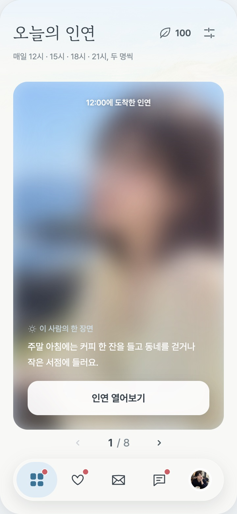
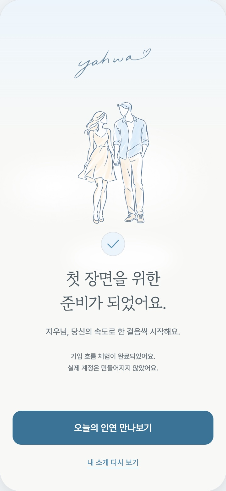

소개 완성 → 인연 홈 입장 모션
“오늘의 인연 만나보기”를 누르면 지금은 인연 홈이 그냥 바뀌어 나타나요. 처음 인연을 만나는 순간이라, 화면이 한 장씩 도착하듯 부드럽게 들어오게 하는 시안이에요. 앱은 아직 바꾸지 않았어요. 폰을 누르거나 “다시 보기”를 누르면 재생돼요. 폰 화면은 실제 앱을 찍은 거예요.
E1 · 한 장씩 도착 추천


완성 화면이 살짝 위로 옅어지고(0.26초), 인연 홈이 위에서부터 차례로 떠올라요. 제목(16px) → 인연 카드(28px · 0.98에서 1로) → 하단 메뉴(아래에서 밀려 올라옴), 각 0.08초 간격. 가입 단계에서 내용이 떠오르던 것과 같은 튕김 없는 곡선이라 흐름이 이어져요. 전체 약 1초.
E2 · 현상되듯 선명해지기
완성 화면이 옅어지는 동안 인연 홈 전체가 살짝 흐리고 밝은 상태(흐림 8 · 1.04배)에서 선명해지며 자리 잡아요. 필름이 현상되는 느낌이라 웰컴 사진 모션과 어울리지만, 흐림 효과라 낮은 사양 폰에서는 끊길 수 있어요.
E3 · 조용한 교차 페이드
두 화면을 0.32초 동안 겹쳐 바꿔요. 가장 단순하고 빠르지만, 지금과 차이가 작아 “도착했다”는 느낌은 약해요.